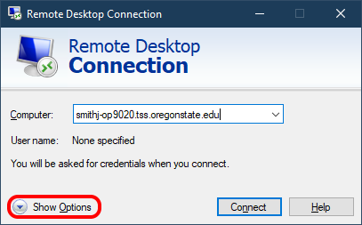

Home
Client Configuration: (see images below for illustration)
- Launch the Remote Desktop client in Windows.
- In the field labeled "Computer," enter the fully-qualified domain name (full Internet name) of the target computer (the user's office computer).
- Dynamic IPs: If the computer is in a dynamic address range, you will need to remote to the IP address of the computer instead of the host name. Note that the IP address could change in a dynamic range, but it probably won't so long as the computer stays on and connected to the network (it will keep renewing it's IP address).
- Click the "Show Options" button in the lower-left corner of the dialog box.

- Click the "Advanced" tab.
- Click the "Settings..." button in the lower-left corner of the Advanced tab.
.png)
- Select the radio button labeled "User these RD Gateway server settings."
- In the field labeled "Server name," enter "desktop.oregonstate.edu"
.png)
- Note: this is the address of the Remote Desktop gateway cluster; it is not the address of the target desktop computer.
- Select the check box for "Bypass RD Gateway server for local addresses"
- Leave remaining options at default values.
.png)
- Note: if the customer logs into their remote computer with their OSU credentials, you can have them check the box to "Use my RD Gateway credentials for the remote computer."
- Click "OK" on the settings screen.
- Click "Connect" on the connection connection dialog.
- Follow prompts to login to the RD gateway.
- Follow prompts to login to the target computer (user's office computer)